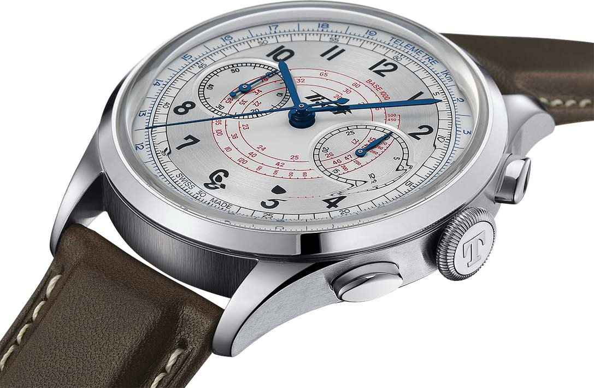
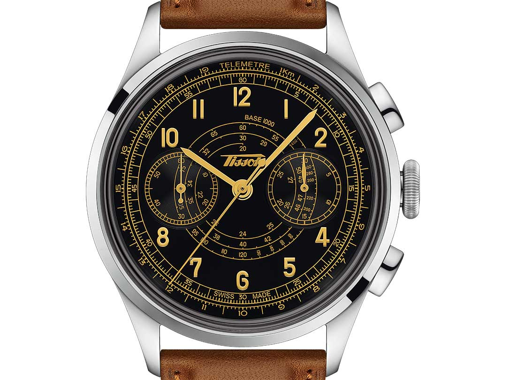
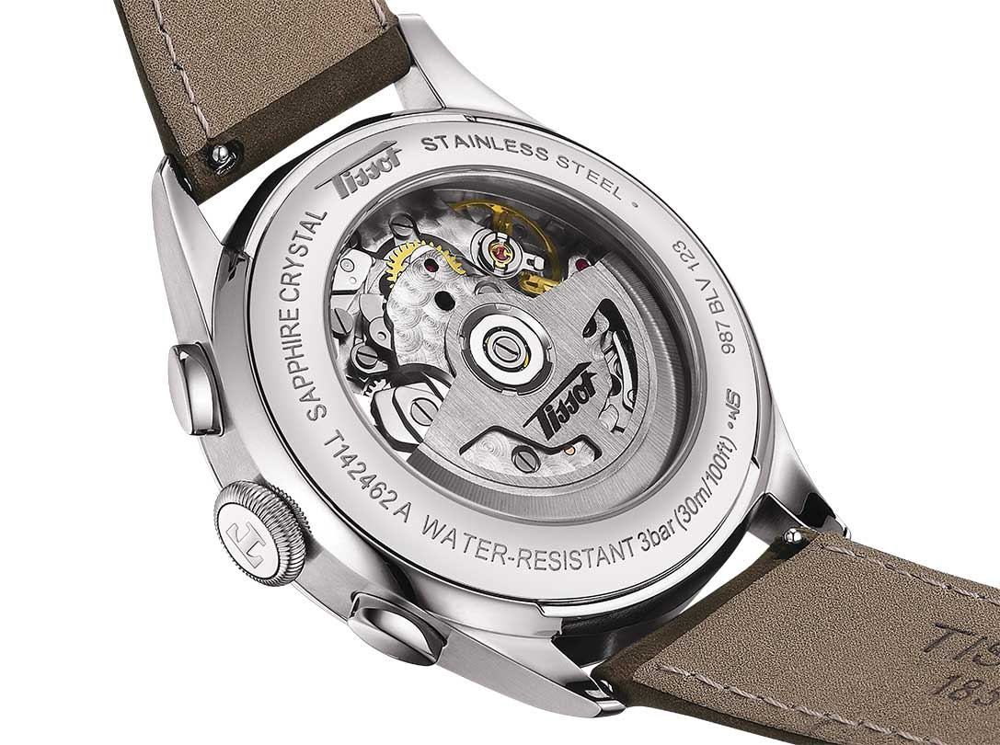

Để tôn vinh nguồn gốc của tính năng bấm giờ thể thao, bắt đầu từ 84 năm trước trên sườn núi tuyết Villars-sur-Ollon, thương hiệu đồng hồ này đã cho ra mắt hai mẫu đồng hồ mang tinh thần cổ điển.
Được coi là một công cụ thiết thực trong nhiều tình huống, đồng hồ bấm giờ đã được sử dụng trong nhiều năm để xác định tốc độ hoặc độ dài của một hành trình. Để có được dữ liệu trực tiếp mà không cần tính toán, mặt số của những năm trước đã được trang bị các thang đo có vạch chia cụ thể. Đây là những tính năng được tìm thấy trên đồng hồ Telemeter 1938 mới của Tissot. Ở trung tâm, màu đỏ, một thang đo tốc độ xoắn ốc cho phép xác định tốc độ trong một khoảng cách chính xác. Màu đen, kim giây hình lưỡi dao chạy dọc theo bộ đếm thời gian. Ở cạnh ngoài của mặt số, màu xanh lam, một thang đo từ xa cho biết khoảng cách của hiện tượng có thể nhìn thấy đầu tiên, sau đó có thể nghe được, chẳng hạn như tia chớp. Sự hiện diện của các chức năng này, kim giây nhỏ và bộ đếm 30 phút ở vị trí kim đồng hồ, mang đến vẻ ngoài cổ điển cho mẫu đồng hồ này. Sự xuất hiện này được nhấn mạnh vào sự thay đổi kết hợp giữa mặt số màu đen với vòng tròn giờ màu be và các chỉ số.
Bên trong vỏ thép đường kính 42mm, bộ máy Valjoux A05.231 kiểm soát phép đo thời gian. Các nút ấn kín đáo được tích hợp ở giữa vỏ cho phép kích hoạt các chức năng này. Một núm lớn, phẳng, có khía giúp bạn dễ dàng đặt đồng hồ. Bộ chuyển động tự lên dây cót được trang bị lò xo cân bằng Nivachron® mang lại khả năng dự trữ năng lượng trong 68 giờ. Tissot Telemeter 1938 được trang bị dây đeo tay bằng da sẫm màu hoặc nâu nhạt tùy thuộc vào phiên bản. Kết hợp với lớp gỉ của thời gian, chúng sẽ tôn lên phong cách lịch lãm của chiếc đồng hồ bấm giờ này.
